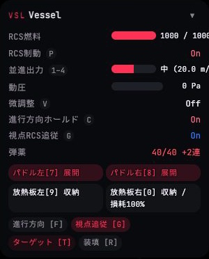
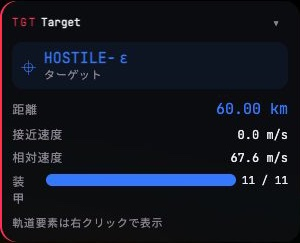
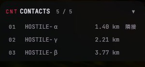
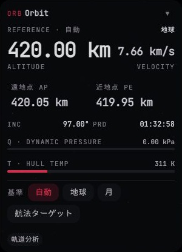
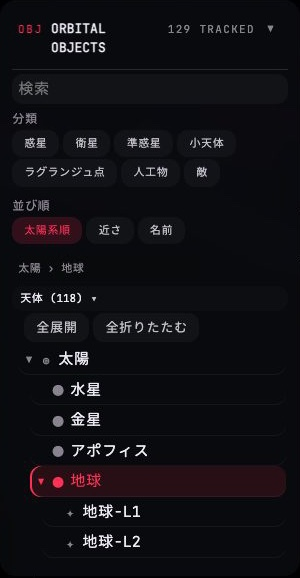

レールに載る5つのパネルを、実際のレール幅 300px(medium の左レールは 220px、右は 260px)で現行と改修案に並べ、さらに
正常/注意/警告/折りたたみ/対象なしの状態を並べる。改修案は foundation/ref.css の .ix-* と tepui-base.css の .w-* で組んだ実 DOM で、
表示する値は現行の撮影と同じ状況(stage 1・LEO 420 km・ターゲット HOSTILE-ε 60 km・敵5機)。
文法(色の意味・1行・状態ピップ・キーキャップ・メーター・3段の強弱)は 01 表示の文法に従い、ここではそれを各パネルの行まで落とす。
注記の番号は、各ペインの左の丸いピンと対応する。注記は「何を・なぜ(監査の番号)・どの src のどの要素・どの SPEC」の順で書く。
全パネル共通の規則:
① 見出しは [記号][題名] ……… [補足][▾]、記号は中立色。畳むと本文が消え、見出しの補足が「そのパネルの答え」へ変わる(いちばん重い状態は色+記号で残る)。
② 行は [ラベル][メーター][値 単位]。値は切らず、幅が足りなければメーター→ラベルの順に譲り、220px 級ではメーターをラベルの下へ落とす。
③ 色は意味でだけ付く(自分=主役色、ターゲット=第二色、注意=△、警告=▲)。正常値は中立。
④ 状態は on / 押下 / 無効 の3語だけ(SPEC UI-DESIGN §3)。
VSL艦のステータス
SPEC §8 の問いは「いま艦はどんな状態で、どう構えているか」。現行は計器・モード・弾薬・展開部品・操作が1枚に混ざり(監査7)、値が右端で切れる(監査2)。 改修案は同じ1枚を責務の順に4つの区画へ分ける: 計器(量=メーター) → モード(構え=ピップとキー) → 展開(物理部品の状態と操作) → 操作(単発の行為)。 区画は小見出しと余白だけで区切り、線は引かない。

責務の分け方 — 現行の1行が、どの区画のどの形になるか
| 区画 | 答える問い | 現行の行 | 改修後の形 |
|---|---|---|---|
| 計器 | 量はいくつか、閾値まで余裕はあるか | RCS燃料・並進出力・動圧・(弾薬) | .ix-row + .ix-gauge(閾値の目盛り)+ 値 + 単位。船体温度を新規行で追加(ORB と同じ値)。弾薬は文字行のまま |
| モード | どう構えているか | RCS制動・微調整・進行方向ホールド・視点RCS追従(On/Off の色文字) | .ix-row + .ix-pip(ON/OFF)+ .key。自分で掛けた制動・ホールドだけ主役色 |
| 展開 | パドル・放熱板はどの状態で、傷んでいないか | 2×2 の大きな点灯ボタン(展開/収納/損耗100% を文章で) | ラベル + 左右の .w-btn.on(展開=点灯)+ キー + 損耗の記号付き数値 |
| 操作 | 単発の行為は何があるか | 進行方向 [F] / 視点追従 [G] / ターゲット [T] / 装填 [R] | .w-btn 3つ(進行方向・ターゲット・装填)。視点追従はモード区画が状態を持つので、ボタンから外す |
| タッチ | キーでしか選べない操作を指で選べるか | 推力段の SegmentedControl を計器の下へ追加(1–4) | 並進出力の行がそのまま4段のセグメントに置き換わる(重複しない)。モードは点灯ボタンの列になる |
状態のバリエーション
注意・警告の閾値(目盛り)は 01 に合わせる: 燃料 20% 以下で注意・5% 以下で警告 / 動圧 70%・90% / 船体温度 75%・90% / 放熱板の損耗 50% 超で注意・90% 以上で警告。現行コードは動圧 50%・船体温度 70%・燃料 20% を一律に赤にしている。
- 見出し: 記号を中立に、題名は日本語、畳むと要約が残る。 記号 VSL を
--text-faint、題名を「艦のステータス」(SPEC §8 の名称)、開閉は ▾/▸。畳んだ見出しの補足に最も重い状態(例「▲ 燃料 4%」)を出す — 畳んでいても警告が埋もれない(監査1・7)。 src/game/hud/hud-root.ts のconfigureCombatPanel(記号 span ・ aria)・buildVesselStatusPanel(題名 'Vessel')/ src/game/hud/panel-shell.ts のPanelShell(要約を書くsetSummary(text, level)を追加)/ src/game/hud/style/editorial-data-style.ts の#hud .ui-section-code(color: primary → text-faint)/ src/game/hud/panels/vessel-panel.ts のsync(要約を渡す) ・ SPEC UI-DESIGN §5 は変更不要 - 計器は「ラベル・メーター・値 単位」の行で、列を全行で揃える。 現行は
dl.metric-list > .row.metricの flex で、メーター+値を 128px 固定の.vessel-meter-readoutに押し込むため、値が右端で切れる(1000 / 100…)。改修案は.ix-rows.is-aligned(列を決める) +.ix-row(subgrid)で、メーターの左端と値の右端が全行で揃い、値はwhite-space: nowrap(監査2)。 src/game/hud/hud-root.ts のbuildVesselStatusPanel(.row.metric→.ix-row。dd.vのoutputは.ix-v)/ src/game/hud/style/combat-panel-rows-style.ts の.vessel-meter-readoutと#hud-vessel-status .v { min-width: 75px }を削除 / src/game/hud/style/combat-view-style.ts の.combat-panel .metric*を.ix-row系へ置換 - メーターは細い中立の線 + 閾値の目盛り。色は越えたときだけ。 満タンの RCS 燃料が最も強く主張している現行(主役色・高さ 12px)をやめる。
Meter.setProgress(now, max, valueText, danger: boolean)を(now, max, level: 'normal' | 'caution' | 'warning')へ、閾値の位置を渡すsetThreshold(ratio)を足す。値は常にバーの外(右)に出し、w-meter-valueの重ね書きは使わない(監査1)。 src/hud/widgets/meter.ts(setProgress・setDanger・setLabel)/ src/hud/widgets/widget-style.ts の.w-meter-track/.w-meter-fill(高さを--ix-gauge-h、塗りを中立、.caution/.warningを追加)/ src/game/hud/panels/vessel-panel.ts のsyncMeterと燃料・動圧のcritical引数 ・ SPEC §3 メーター「危険域は専用の警告色」は「注意と警告の2段」へ更新が要る - 並進出力: 値を「段名 + 加速度」の2語にし、キーは 1つのキーキャップ。 現行は
中 (20.0 m/s²)という括弧つき1文字列が切れていた。「中」を値、20.0 m/s²を単位として淡く。段は 25% ごとの切れ目で読める(.ix-gauge.is-steps)。キーは1–4を.key1つ。 src/game/hud/panels/vessel-panel.ts のsync(THROTTLE_LABELS[idx] (${…toFixed(1)} m/s²)の組み立て)/ src/game/hud/hud-root.ts の並進出力 <kbd>${K.throttleLow.label}–${K.throttleMax.label}</kbd> - モードの On/Off を、色文字から状態ピップへ。 現行は
Onを赤(ui-near)・青(ui-signal)・白で書き分けていた。改修案は.ix-pip(ON は塗り点、OFF は輪)。自分で掛けた制動とホールドだけ.is-own(主役色)、視点追従は中立。1つの値に色が複数の意味を持たない(監査1・4)。 src/game/hud/panels/vessel-panel.ts のsyncState(textContent = 'On'/'Off'とui-near/ui-signalの切替 →.on/.is-ownの切替。引数role: 'near' | 'signal'はown: booleanへ)/ src/game/hud/style/editorial-data-style.ts と skeleton-style.ts の.ui-near/.ui-signalの使用箇所 ・ SPEC §3「状態語彙は3つ」と整合(on のみ) - キーの表記を
.keyに1本化。 現行の<kbd>P</kbd>・1–4・[7]・[F]の4通りを、ラベルの右の同じキーキャップへ(監査3)。キー名はK.xxx.labelから引き、文字列に埋め込まない。 src/game/hud/hud-root.ts(<kbd>${K.rcsDampToggle.label}</kbd>ほか)/ src/game/hud/style/combat-view-style.ts の.combat-panel kbd→.key/ src/game/hud/panels/vessel-panel.ts のRADIATOR_UI・SOLAR_UI・addAction(ラベルの[${key.label}]を廃止) - 展開部品: 大きなボタンの塗りつぶしをやめ、「ラベル + 左右ボタン + キー + 損耗の記号付き数値」の1行にする。 現行は塗り幅で損耗を示し、
放熱板右[0] 収納 / 損耗100%が2行に折れていた。展開=点灯(w-btn.on)、損耗は 0 を超えたときだけ出し、50% 超で △・90% 以上で ▲。押せることはw-btnの面で示す(原則: 押せるものは w-btn)。aria-label には「パドル左 展開、損耗 0%」を残す。 src/game/hud/panels/vessel-panel.ts のbuildDeployButton(.fill/.labelの innerHTML)・syncDeployButton(fillWidth/fillColorとtextの組み立て。RADIATOR_HIGH_WEARを2段へ)/ src/game/hud/style/combat-panel-rows-style.ts の.vessel-deploy-controls・.vessel-deploy-btn .fill・.label/ src/game/hud/style/combat-view-style.ts の.vessel-deploy-btn* - 操作は単発の行為だけ。 進行方向リセット・ターゲット選択・装填の3つ。ラベルは「進行方向」「ターゲット」「装填」+ キーキャップで、現行の
[F]書きと、点灯の意味が曖昧な「視点追従 [G]」(モード行と二重表示)を解消(監査3・4・7)。ターゲットだけ第二色(ターゲットの色の意味に一致)。 src/game/hud/panels/vessel-panel.ts のbuildActionButtons(addActionのvariants: 'primary'→ ターゲットは.is-tgt。followButtonとそのsetOnを削除し、タッチ用はモード列へ)/ src/game/hud/style/combat-panel-rows-style.ts の.combat-panel .panel-actions .w-btn・ SPEC §8 VSL「ボタンを持つ操作にはキー割り当てもある」に整合 - 弾薬は文字行。
Fuel: …の代用表示は削除。 現行は機関砲が無い艦で弾薬の行にFuel: 1000 / 1000を出していたが、燃料は計器にある(二重)。弾薬は残弾を値、/ 40 · 予備 2連を単位とし、予備 1連以下で注意・弾切れで警告(現行は予備 4連未満が常に赤)。機関砲が無い艦では行ごと畳む(SPEC §8 の「対象が持たない値の行は畳む」と同じ扱い)。 src/game/hud/panels/vessel-panel.ts のsync末尾のammoEl分岐(Fuel:行・ui-dangerの切替)/ src/game/hud/ammo-status.ts のfmtAmmoStatus(文字列でなく{ value, unit, level }を返す) - タッチ: 推力段は計器の行そのものが4段のボタンになる。 現行は計器の下に別の SegmentedControl を足して二重になっていた。改修案は
body.touch-ui-activeのときだけ、並進出力の行を「1 弱 / 2 中 / 3 強 / 4 最強」の4ボタンへ置換(最小 44px)。さらに、キーでしか入らない制動・微調整・ホールド・視点追従を点灯ボタンの列で補う(キーキャップは無し)。SPEC §8 の「タッチ環境でのみ、キーでしか選べない操作の列を補う」の実装。 src/game/hud/panels/vessel-panel.ts のbuildThrottleControl(status-throttle-touchの追加先を計器の行へ)・tapKey経路の流用 / src/game/hud/style/combat-panel-rows-style.ts の.status-throttle-touch { display: none }とbody.touch-ui-activeの規則 / src/game/hud/style/combat-view-style.ts の.status-throttle-touch .w-btn・ SPEC §6(タップ 44px) - 船体温度の行を追加し、動圧と並べる。 動圧と同じ「環境負荷」として艦のステータスにも出す(ORB と同じ値
temperatureKを使う)。ORB と二重に出る点は設計判断が要る(SPEC §8 は環境の危険を ORB の問いとしている)。ここでは、操縦中に推力と環境を同じレールで見比べたいという理由で残し、判断は報告に挙げる。 src/game/hud/panels/vessel-panel.ts のVesselPanelViewModel(temperatureKを追加)/ src/game/hud/hud-root.ts のbuildVesselStatusPanel(行を足す)・閾値は src/game/dynamic/dynamic-entity/combat-ship-entity.ts のMAX_HULL_TEMP(1300 K)と src/game/player/aero-load.ts のMAX_DYN_PRESSURE(35 kPa)から割合で導く ・ SPEC §8 VSL へ「環境(動圧・船体温度)」を明記する更新が要る
TGTターゲット
SPEC §8 の問いは「いま狙っている相手に、撃てるか」。引き金を引く判断に要る値は距離・接近速度・相対速度・残装甲の4つだけ。 現行は4つが同じ強さで並び、「装甲」が縦に折れ(監査2)、距離だけが青い。改修案は強弱を3段に付ける: 距離=主読み値・接近速度=準主読み値・相対速度/装甲=行。

状態のバリエーション(タンパク質敵の機能部位つきを含む)
対象なし = ロックが無い間はパネルごと非表示(SPEC §8「ロック時のみ表示」)。基地は装甲を持たないので装甲の行が畳まれる(「対象が持たない値の行は畳む」)。近接の閾値(1 km で注意・200 m で警告)はこの提案で新設する値で、SPEC §8 TGT への追記が要る。
- 識別行: 名前は第二色、対象の種別を右端へ。 現行は名前の下に常に「ターゲット」と書いていた(情報量ゼロ)。右端を対象の種別(艦/基地/タンパク質名)にし、パネル枠の左縁の線(
#hud[data-attention="engagement"] #hud-target { box-shadow: inset 2px 0 … })は廃止 — 主役色は自分のもので、ターゲットの強調は第二色の識別行だけ(監査1)。 src/game/hud/hud-root.ts のbuildTargetPanel(.target-identityと.target-roleの定数文字列)/ src/game/hud/panels/target-panel.ts のTargetPanelViewModel(kind: stringを追加)・syncTarget/ src/game/hud/style/combat-view-style.ts の.target-identity・.target-lock-glyph・.target-name→.ix-ident.is-tgt/ src/game/hud/style/combat-panel-rows-style.ts の#hud[data-attention="engagement"] #hud-targetを削除 - 距離と接近速度を主読み値にする。 距離は 24px(
.ix-readout.is-m.is-tgt)、接近速度は 18px(.is-s)の左右ペア、相対速度は行に落とす。撃つ判断の第一は「どれだけ離れているか」「どれだけ近づいているか」で、相対速度は補助。幅が 220px 級に縮むとペアは縦に積む(.is-stack-narrow)。 src/game/hud/hud-root.ts のbuildTargetPanel(.metric-listの3行 →.ix-pair+.ix-row)/ src/game/hud/panels/target-panel.ts のsyncTarget(fmtDist/fmtSpeedの戻りを値と単位に分ける。src/hud/utils.tsにfmtDistParts/fmtSpeedPartsを足す)/ src/game/hud/style/combat-view-style.ts の.target-primary-value - 装甲の行: 折り返さない・赤にしない。 現行は
.armor-readout { width: 100% }がラベル列を押し潰し「装/甲」が縦に折れていた。ラベル列をfit-contentにし、メーターはターゲットの色で塗る。敵の装甲が減るのは良いことなので、閾値の警告色は使わない(現行のhp ≤ 30%の danger 引数を廃止)。 src/game/hud/panels/target-panel.ts のsyncTarget(armorMeter.setProgress(…, hp <= maxHp * 0.3)の第4引数 →'normal'固定、tone: 'tgt')/ src/game/hud/style/combat-view-style.ts の.armor-readout・.armor-meter .w-meter-fill・.armor-valueを削除 - 近接は距離の色+記号で。 1 km 未満で距離に △(注意)、200 m 未満で ▲(警告、行の面も赤)。接近速度が大きいときの衝突の危険は同じ値で読める。警報灯の発報は 05 の規則に従う(パネルは読み値だけを塗る)。
src/game/hud/panels/target-panel.ts の
syncTarget(距離から level を求める)・閾値の定数は src/game/hud/panels/ 内に置く ・ SPEC §8 TGT へ追記 - 機能部位(タンパク質敵): 見出し小・構造安定性・部位行。 SPEC §8 の記述どおり、部位は「攻撃可否のグリフ + 英語略号 + 三角形HPアイコン + 数値」だけ(バーを使わない)。HP の三角形は艦のマーカーと同じ意匠。グリフの形は
◆(攻撃可)/◇(攻撃不可)/×(停止)へ — 現行の▲/△は注意・警告の記号と衝突するため。位相(INTACT/EXPOSED…)は小見出しの右。 src/game/hud/panels/target-panel.ts のsyncTarget(glyph = site.disabled ? '▽' : site.attackable ? '▲' : '△'と、protein-site-rowの innerHTML)/ src/game/hud/style/combat-panel-rows-style.ts の.protein-site-*・.protein-target-*→.ix-site*・ SPEC §8 TGT 「機能部位一覧」の「グリフ」の字形を規定する更新が要る - 基地(装甲なし)は装甲の行を畳む。 満タン相当の値で埋めない(SPEC §8 に既出)。現行も
tgt-armor-rowを畳んでおり、挙動は同じ — 行の殻が.ix-rowへ変わるだけ。 src/game/hud/panels/target-panel.ts のsyncTarget(tgt-armor-rowのhidden切替) - 末尾の案内行: 右クリックだけでなく長押しも書く。 現行の「軌道要素は右クリックで表示」はタッチで読めない(SPEC §6: 長押し=右クリック相当、説明をホバー/マウス専用にしない)。補足の段(11px・淡色)の1行。
src/game/hud/hud-root.ts の
buildTargetPanel(.target-help)・SPEC §8 TGT「案内行」の文言
CNT敵一覧
SPEC §8: 生存中の敵を距離順に列挙し、同じ波は「第N波 ×件数」の1行に集約する。現行は連番「01 02 03」が情報を持たず、見出しは「CONTACTS」だけ英大文字で他と不揃い、固定/隣接が同じ主役色で並ぶ。
改修案の行は .ix-item([グリフ] [名前] [距離] [状態語])で、固定=第二色の面・隣接=注意色の状態語・近接=距離を注意色。

状態のバリエーション(波の集約行を含む)
対象なし = 敵が0機のときパネルごと非表示(現行コードと同じ。contact-empty の「残存目標なし」は到達しない)。波の行は特定の1機を指さないので右クリックしても何も起きない(SPEC §8)— 行の見た目も「単独の敵」と同じ強さにして、押せそうに見せない。
- 見出し: 題名を日本語に、件数は補足へ。 「CONTACTS 5 / 5」を「敵一覧 ……… 残 5 / 5」にする(題名が英大文字なのはこのパネルだけ)。数値の意味を「残」で言い切る(SPEC §8 の「出撃数/撃破数のバッジ」の文言と、実装の
remainingCount / totalCountが食い違っている — 報告に挙げる)。 src/game/hud/hud-root.ts のbuildEnemiesPanel(題名 'CONTACTS'、.panel-count)/ src/game/hud/panels/enemies-panel.ts のsync(count.textContent・aria-label)/ src/game/hud/style/combat-view-style.ts の#hud-enemies .panel-count - 行: 連番をやめて、状態を持つグリフにする。 現行の
counter-incrementによる「01・02…」は並び順の他に意味が無い。グリフは敵 △、ロック中 ⌖(第二色)。.ix-itemは名前・距離・状態語を右に揃え、距離は桁が揃う(tabular-nums)。固定行は.is-tgt(第二色の面)で、現行の左縁の主役色の線は廃止(監査1)。 src/game/hud/panels/enemies-panel.ts のsyncEnemyList(li.contact-rowの3 span とui-accent/ui-nearクラス →.ix-itemの4 span と.is-tgt/.is-near)/ src/game/hud/style/combat-view-style.ts の.contact-row・.contact-row::before・.contact-role・.contact-row.ui-accent/ src/game/hud/style/combat-panel-rows-style.ts の#hud-enemies .erow(未使用の旧規則) - 波の集約行: 「第N波 ×件数」+ 最も近い個体の距離。 件数は淡い単位(
×3)として名前の後ろへ。距離は波の最短距離。波の中にロック中の個体がいれば、行は固定の見た目(第二色の面)になる。見出しと同じ並びの1種類の行で、波専用の部品は作らない。 src/game/hud/panels/enemies-panel.ts のbuildEnemyRows(波の代表距離・targetedの集約。ロジックは変えない)・syncEnemyList(labelの組み立てを name と count に分ける)・SPEC §8 敵一覧 - 近接の状態を距離に出す。 500 m 未満で距離に △、100 m 未満で ▲(行の面も赤)。「隣接」の状態語は注意色の文字のまま(最も近い未固定の1行)。名前の「隣接」は意味が曖昧(最近傍の意)なので、SPEC の言葉に合わせて改めるか要検討。
src/game/hud/panels/enemies-panel.ts の
syncEnemyList(isAdjacent・role)・閾値の定数は同ファイルへ ・ SPEC §8 敵一覧へ追記
ORB軌道
SPEC §8: 「操作対象はいまどこをどう飛んでいて、この先どうなるか」。主読み値は高度(と速度)、その根拠が遠地点・近地点・傾斜・周期、先行きの危険が動圧と船体温度。 現行は主読み値が 34px で良いが、遠地点/近地点の箱・INC/PRD・動圧・温度が罫線も強弱もなく並び、基準のピルが2行に折れ、「REFERENCE · 自動」と「地球」が離れている。 改修案は 読む順(高度 → 形 → 危険 → 基準)を保ったまま、行の文法と閾値つきメーターに揃える。

状態のバリエーション
軌道要素が求まらない状態(基準が重力中心でない・双曲線軌道)では、遠地点・近地点・傾斜・周期が「---」になり、行は残して値だけ淡色にする(欄を詰めない)。大気を受けない操作対象(基地)では動圧の行ごと畳む(SPEC §8 に既出)。
- 主読み値: 高度は最大、速度はその右に1段小さく。
.ix-readout(高度 34px)と.ix-readout.is-s(速度 18px)の左右ペア。現行は速度が「7.66 km/s」を高度の隣に置いた構図で良いが、ラベル(ALTITUDE/VELOCITY)が英語で遠いので、値の直下に日本語の補足(高度・速度)を付ける。高度の降下警告(現行descendWarnedの赤字)は、値を警告色にし補足を「▲ 高度」にする。220px では2つを縦に積む。 src/game/hud/hud-root.ts のbuildOrbitInfoPanel(.orbit-primary-grid→.ix-pair+.ix-readout)/ src/game/hud/orbit/orbit-panel.ts のsync(altのui-danger切替 → level)/ src/game/hud/style/editorial-data-style.ts の.ui-data-hero・.ui-data-major・.ui-data-labelと combat-panel-rows-style.ts の.orbit-primary* - 軌道の形: 箱をやめ、遠地点・近地点・傾斜角・周期を同じ行にする。 現行は遠地点/近地点だけが
glass-insetの箱で、INC/PRD は別の小さな2列。4つとも「値」で、強弱は同じ(補足の段)なので、同じ.ix-rowにそろえる。ラベルは天体ごとに変わる(getApsisLabelSpec: 遠地点/遠月点…)。近地点が大気圏に近いときは △。 src/game/hud/hud-root.ts のbuildOrbitInfoPanel(.orbit-apsides・.orbit-secondary-grid→.ix-rows)/ src/game/hud/orbit/orbit-panel.ts のsync(ap-label/pe-labelの組み立て)/ src/game/hud/style/combat-panel-rows-style.ts の.orbit-apsis・.orbit-apsides・.orbit-secondary-grid(削除) - 環境負荷: 閾値の目盛りつきメーター + 注意/警告の2段。 現行は閾値を越えたとき値を赤字にして行の面を赤くするだけで、越える手前が分からない(動圧 50%・船体温度 70% で一斉に赤)。改修案は目盛り(動圧 70%・船体温度 75%)に近づく様子をメーターで見せ、越えたら注意 △(色)、90% 以上で警告 ▲(行の面)。メーターは4px の細線で、ラベル・値と同じ行。
src/game/hud/orbit/orbit-panel.ts の
sync(qDanger/tDangerとui-danger-fillの切替 → level 2段)・qdynMeter/tempMeterのsetProgress/ src/game/hud/hud-root.ts(.orbit-environment・.orbit-env-row)/ src/game/hud/style/combat-panel-rows-style.ts の.orbit-env-*・ 閾値の割合は src/game/player/aero-load.ts・combat-ship-entity.ts の最大値から導く ・ SPEC §8 ORB 「危険の度合い」へ閾値2段を追記 - 基準の選択: 1行に収め、押せることを面で示す。 「基準」の見出し + 4択のセグメント(
.w-group+.w-btn--dense)が300pxで1行に収まる(現行は主役色のピルと大きいボタンで2行に折れ、「航法ターゲット」だけ孤立)。選択中は.on(主役色=自分の選択)。220px では折り返すが切れない。選択が即時反映する規約(SPEC §8 ORB)はそのまま。 src/game/hud/orbit/orbit-panel.ts のREFERENCE_ITEMS・referenceControl(SegmentedControlのラベル 'REFERENCE · 自動' の文脈行は削除し、見出しの補足に中心天体を出す)/ src/game/hud/hud-root.ts(orbit-context-rowの削除・reference-row)/ src/game/hud/style/combat-panel-rows-style.ts の.orbit-context-row・.orbit-controls・.orbit-controls .w-segmented - 軌道分析の入口は第二級の1ボタン。 「軌道分析」は常用の操作ではないので、補足の強さ(
.w-btn--secondary.w-btn--dense)で下端に置く。マップビューで畳まれる規則(SPEC §8)は変えない。 src/game/hud/orbit/orbit-panel.ts のbuildActionButtons(new Button('軌道分析', …)に variants を渡す) - 畳んだ見出しは高度を出す。 畳んでいても「いまどの高さか」は読める(主読み値の要約)。降下警告・環境の注意/警告があるときは、いちばん重い1つが色+記号で残る。
src/game/hud/panel-shell.ts の
PanelShell.setSummary(1 と共通)/ src/game/hud/orbit/orbit-panel.ts のsync
OBJ物体一覧 — 行の状態だけ
マップ左レールの物体一覧は 03 が全体配置を担当する。ここでは行(.ix-item)の状態だけを定める。
現行の選択行は全幅の主役色の面(地球)だが、改修後も「自分の選択」は主役色(on)、「ターゲット」は第二色、「接近」は注意色の状態語、畳まれた木は ▸ と件数。
状態は5種(通常・ホバー・選択中・ターゲット・接近)と木の開閉で、ホバーは装飾(情報を持たない — SPEC §6)。

- 行の状態を5つの語彙に閉じる。 通常 / ホバー(面と文字がアクセント化するだけ)/ 選択中(
.ui-selectable.on= 主役色の面)/ ターゲット(.is-tgt= 第二色の面とタグ)/ 接近(.is-near= タグだけ注意色、行は変えない)。「選択」と「ターゲット」が同時なら、ターゲットの色が勝つ(ターゲットは敵や航法目標という別の意味を持つため)。木の開閉は ▸/▾(SPEC §3 開閉トグルの共通記号)で、畳んだ行の右に子の件数を出す。 src/game/hud/panels/physical-object-list-panel.ts(physical-object-list-section-headerのui-selectable・グリフ)/ src/game/hud/panels/physical-object-list-row-tree.ts(行の組み立てと木の展開)/ src/game/hud/style/map-view-style.ts(.physical-object-list-*の選択行の背景)・行の殻は.ix-itemへ ・ SPEC §8 の物体一覧と MAP.md の選択規則
220幅 220px(medium の左レール)でも値が切れない
medium の左レールは 220px、右レールは 260px。最悪の値(月の高度 384.40 Mm・速度 10.92 km/s・動圧 28.00 kPa・船体温度 1220 K、艦では「最強 400.0 m/s²」・燃料「1000 / 1000」)を、300px・260px・220px に並べる。 300→260 は列の幅が縮むだけで、220px ではメーターがラベルの下へ落ち、読み値のペアが縦に積まれる。値と単位は常に残る。
- 狭いレールの規則は、パネル自身の幅(コンテナ)で判断する。 画面幅のメディアクエリではなく
.ix-panel { container-type: inline-size }に対する@containerで切り替える — レール幅は--rail-w-left/rightが画面幅で 300/260/220 と変わり、パネル内の規則がそれを知らなくて済む(SPEC §5 ブレークポイントの値を直書きしない規約、CODING-RULE 1.12)。列を揃えるsubgridと合わせて、ref.css への昇格候補。 src/game/hud/style/layout-tokens.ts(--rail-w-*は変更しない)/ src/game/hud/panel-shell.ts(.panel-shellにcontainer-type)/ src/game/hud/style/combat-panel-rows-style.ts(行の列定義を.ix-rowsへ)・ DEVELOP/CODING-RULE.md 1.12 の例に追記
PLAN改修の手順
小さく入れられる順。各段で npm run typecheck を通し、触った層のテストを回す(test:game・test:render)。見た目が変わる段は、前後の撮影を残す。
- 切れと折返しだけ直す(見た目の文法は変えない)。
.vessel-meter-readoutの 128px 固定幅を外し、値をnowrapにして列を可変にする。「装甲」ラベルの折返しを直す(.armor-readout)。監査2 だけが解ける。combat-panel-rows-style.ts・combat-view-style.tsのみ。 - ショートカットを
.key1種にする。<kbd>・[F]・[7]・1–4を統一(注記 6)。ラベル文字列からキーを外し、vessel-panel.tsのRADIATOR_UI/SOLAR_UI/addActionを直す。監査3。 - 状態を形にし、色を意味で引く。
.ix-pipを入れ、syncStateを.on/.is-ownへ(注記 5)。.ui-section-codeを中立に(注記 1)。主役色の使いどころを自分・選択だけに絞る。監査1・4。theme.tsに意味の別名を足す(01 参照)。 - メーターを細線+閾値にする。
MeterにlevelとsetThresholdを足し、全パネルのsetProgress呼び出しを2段へ(注記 3・14・25)。閾値を SPEC §8 に書いてから入れる(/modify-featureの入口)。 - パネルを責務の区画に分け、列を揃える。 VSL を4区画に、ORB の箱を行に(注記 2・7・8・24)。
.ix-rows.is-alignedと container query を入れて 220px を解く(注記 30)。タッチの推力段と点灯ボタン(注記 10)はここで入れる。 - 畳んだ見出しの要約と、ターゲット/敵一覧の強弱。
PanelShell.setSummary(注記 1・28)、TGT の主読み値・機能部位の字形(注記 13・16)、CNT の行(注記 20〜22)。SPEC §8 の TGT/CNT/VSL/ORB の追記(docs(spec):単独 commit)を先に済ませる。